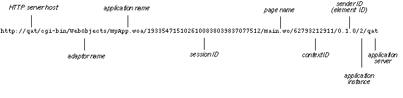
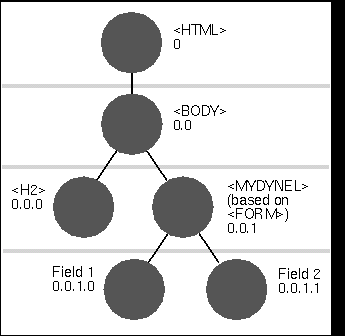

A WOContext object lets you access objects and information that define the context of a transaction. In a typical request-response loop (a transaction), several objects have a hand in what is going on: the WOApplication and WOSession objects, the page involved in the request or response (a WOComponent object), the page's subcomponents (also WOComponents), plus the dynamic elements on the page. The WOContext object passed as an argument in the takeValuesFromRequest:inContext:, invokeActionForRequest:inContext:, and appendToResponse:inContext: messages allows access to these objects. A context is identified by its own unique, randomly generated context ID, which appears in the URL after the session ID and page name.
WOContext objects provide other information and services related to the current transaction. From them you can get the entire URL currently in effect as well as portions of that URL, such as the element ID, the context ID, and the URL up to and including the session ID. (See "Element IDs," below, for a description of what element IDs are and how and why you manipulate them.)
WOContexts also allow you to affect load balancing with the setDistributionEnabled: method; if the flag set by this method is NO (the default), transactions of the session are restricted to a single application instance. If this the case, the application instance number as well as the application host name are appended to the URL.
The following graphic shows a complete URL: the parts after the application name are added by a WebObjects application:

Figure 1: Parts of a URL
A WOContext object plays a further role behind the scenes. For the benefit of a page's dynamic elements, it keeps track of the current component, that is, the WOComponent associated with the current element in the request-handling cycle. The current component can be the WOComponent that represents one of the page's subcomponents or the page itself. By reference to the current component (accessed through WOContext's component method), a dynamic element can exchange values associatively between itself and the WOComponent that contains it.
Note: See the class description of WODynamicElement for an overview of dynamic-element creation and for more on how element-ID manipulation figures into this activity.
Element IDs are composed according to a dot-separated number scheme that structurally reflects the object graph of HTML elements on a page. An example will help clarify this scheme. Suppose you have a dynamic element made from a form with two input fields. Above this dynamic element in the object graph is the <BODY> HTML element, from which also descends a level-2 heading. Above the <BODY> element is the <HTML> element, the root element in the object graph. The following graphic illustrates these relationships and shows the assigned element IDs.

Figure 2: Element ID and position in the object graph
As you can see, there is a level/position correspondence between an object in the graph and its representation in the element ID. To identify its child elements, the dynamic element would send the following sequence of messages to the WOContext object:
// .. first element: input field 1
[aContext appendZeroElementIDComponent]; // 0.1.0 --> 0.1.0.0
// ...next element: input field 2
[aContext incrementLastElementIDComponent]; // 0.1.0.1
// ...done, returning to parent, so delete last digit
[aContext deleteLastElementIDComponent]; // 0.1.0
(Note that the Submit button is not assigned an element ID. In this case, the form itself (<FORM>), which is identified with the dynamic element, is responsible for triggering the action method.)
Note that you don't necessarily have to use digits as components of an element ID. With appendElementIDComponent: you can append strings as components (for example, "0.1.0.UserField"). Regardless of how you implement the scheme, you must be consistent in applying that scheme in the takeValuesFromRequest:inContext: and appendToResponse:inContext: methods.
Appends a string to the current element ID to create an identifier of an HTML element. For example, if the current element ID is "0.1.1" and you send this message with an argument of "NameField," the element ID for that field becomes "0.1.1.NameField".
See Also: - deleteAllElementIDComponents, - deleteLastElementIDComponent, - incrementLastElementIDComponent
Appends a ".0" to the current element ID to create an identifier of the first "child" HTML element. For example, if the current element ID is "0.1.1", after you send this message the element ID becomes "0.1.1.0".
See Also: - deleteAllElementIDComponents, - deleteLastElementIDComponent, - incrementLastElementIDComponent
Returns the WOApplication object that manages the application.
See Also: - component, - page, - request, - response, - session
Returns the component that dynamic elements are currently using to push and pull values associatively. This component could represent the current request or response page or a subcomponent of that page.
See Also: - application, WOComponent class, - page, - request, - response, - session
Returns the context ID of the receiver.
Deletes all components of the current element ID.
See Also: - appendElementIDComponent:, - appendZeroElementIDComponent, - incrementLastElementIDComponent
Deletes the last digit (or name) of the current element ID, along with its dot separator. Thus, after sending this message, "0.0.1.1" becomes "0.0.1".
See Also: - appendElementIDComponent:, - appendZeroElementIDComponent, - incrementLastElementIDComponent
Returns the element ID identifying the current WOElement.
Increments the last digit of the current element ID. For example, after this message is sent, "0.0.1.2" becomes "0.0.1.3".
See Also: - appendElementIDComponent:, - appendZeroElementIDComponent, - deleteAllElementIDComponents, - deleteLastElementIDComponent
Returns a WOContext instance initialized with a unique context ID. The isDistributionEnabled flag is set to NO, meaning that each transaction will be assigned to an application instance specified in a configuration file for load balancing.
Returns whether state distribution among multiple application instances is enabled. Returns NO by default since the default WOSessionStore (state in the server) does not allow distribution. If this flag is disabled, a specific application instance (whose identifying number is embedded in the URL) is assigned to the session.
See Also: - setDistributionEnabled:
Returns the WOComponent object that represents the request or response page.
See Also: - application, - component, - request, - response, - session
Returns the transaction's WORequest object.
See Also: - application, - component, - page, - response, - session
Returns the transaction's WOResponse object.
See Also: - application, - component, - page, - request, - session
Returns the object representing the transaction's session.
See Also: - application, - component, - page, - request, - response, WOSession class
Enables or disables the distribution mechanism that effects load balancing among multiple application instances. When disabled (the default), generated URLs include the application instance number; the adaptor uses this number to route the request to the specific application instance based on information in the configuration file. When this flag is enabled, generated URLs do not contain the application instance number, and thus transactions of a session are handled by whatever application instance is available.
See Also: - isDistributionEnabled
Returns the current URL, including page name, context ID, current element ID, and application name and host.
See Also: - urlSessionPrefix
Returns the prefix of the URL that remains constant throughout the session. The following is an example:
http://dude/cgi-bin/WebObjects/MyApp.woa/182294512835004837261898238455
The long number concluding the URL is the session ID.
See Also: - url